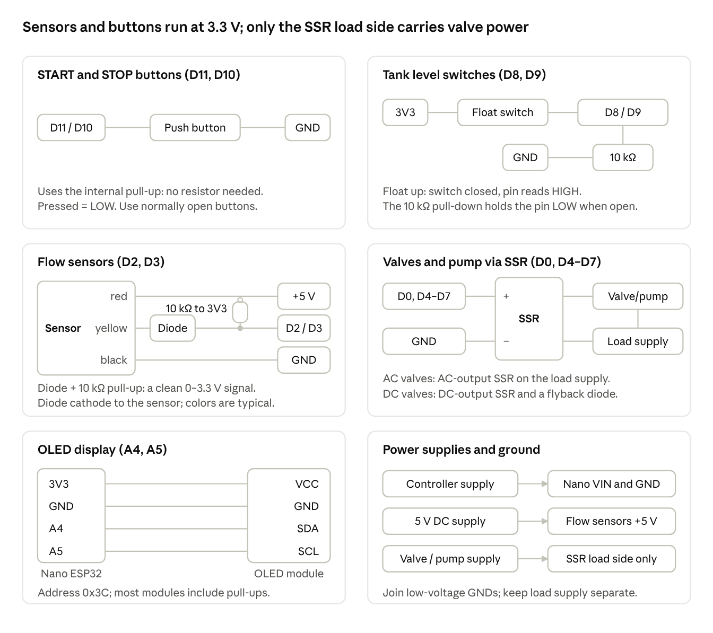
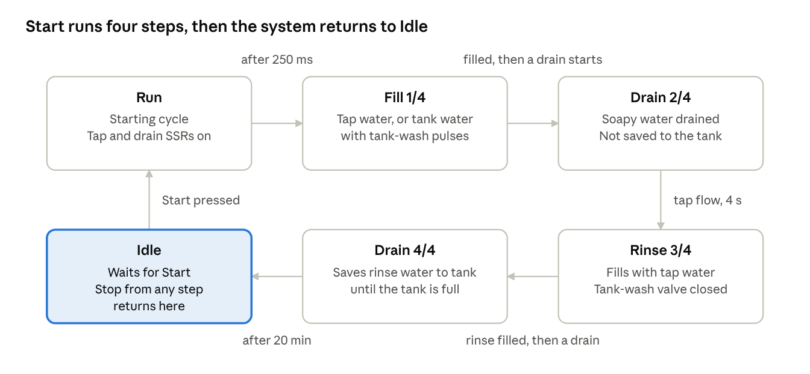

| Item | Detail |
|---|---|
| Document | Reuse Water System – Runbook |
| Version | 3.2 |
| Applies to firmware | FSM_WashingMachineSystem.ino and the GreyWater* files, firmware 3.2.0 (3.2: new name Reuse Water System, start-up animation, Helvetica Bold screen font, larger tank icon, buzzer on D1; 3.1: Spanish and English, chosen in Settings; 3.0: safety task, float-switch rules, code split into modules) |
| Intended audience | Installers, operators and maintenance personnel |
| Related documents | README.md (firmware change summary); Reuse Water System – Quick Card |
This runbook defines how to install, operate, configure, troubleshoot and maintain the Reuse Water System controller. It covers the controller firmware and the hardware connected directly to it. The washing machine, the plumbing design and the mains electrical installation are outside its scope.
Isolation: switch off and lock out the valve and pump supply before working on any wiring. The Stop button is a software control and does not isolate power.
Electrical work: if the valves or pump run on mains voltage, the SSR load wiring must be installed by a qualified electrician to local regulations, with overcurrent protection and an RCD/GFCI.
Environment: mount the controller in an enclosure rated for damp locations, and keep low-voltage wiring separated from mains wiring.
Hygiene: grey water contains detergent residue and bacteria. Wear gloves when servicing the tank, sensors and valves. Stored water is not potable.
Supervision: do not leave the system unattended during commissioning or after a firmware change.
For everyday use you only need the two buttons and the screen. After the controller is switched on, the screen shows a dog chasing a butterfly for about 4 seconds, then REUSE WATER / System ready, then READY.
READY and Press START.1/4 WASH.1/4 to 4/4. In the last step a countdown shows the time left.DONE and Cycle complete, then returns to READY.To cancel at any time, press STOP (the button labelled STOP). The screen shows STOPPED for 4 seconds.
On a phone connected to the home Wi-Fi, open http://reusewater.local to see the same status, start or stop the cycle, and check how much water you have saved (section 11).
| If the screen shows | It means | What to do |
|---|---|---|
| A dog chasing a butterfly | The controller has just been switched on (about 4 s) | Nothing; START skips it |
| READY / Press START | Waiting for you | Press START when the machine is running |
| 1/4 WASH … 4/4 SAVE | Cycle in progress | Nothing; wait |
| Reusing water | The machine is filling with water saved in the tank | Nothing |
| Saving water | Rinse water is being stored in the tank for the next wash | Nothing |
| DONE / Reused 26 L | Cycle finished; that much tap water was saved | Nothing |
| STOPPED / Cycle stopped | You pressed STOP | Press START to begin again |
| No water flow | A step has waited too long for water | Press STOP; check the Service tab of the app, see section 8 |
| Blank screen | No power, or a display fault | Check power, then see section 8 |
Button colors are a recommendation; label your buttons to match.
The controller runs a 4-step wash cycle (Fill, Drain, Rinse, Drain), reuses grey water from a storage tank for the first fill, and saves the rinse water back to the tank. It runs on an Arduino Nano ESP32, drives five solid-state relays (SSRs), reads two flow sensors and two tank level switches, and reports status on a 128x32 OLED.
| Group | Device | What it does | Board pin | Part / type |
|---|---|---|---|---|
| Controller | Arduino Nano ESP32 | Runs the program | — | ABX00083 (ESP32-S3, 3.3 V logic) |
| Operator | START button | Starts a cycle | D11 | Momentary push button, normally open |
| Operator | STOP button | Cancels a cycle | D10 | Momentary push button, normally open |
| Operator | OLED screen | Shows status and progress | A4 (SDA), A5 (SCL) | SSD1306, 128x32, I2C 0x3C |
| Operator | Buzzer (optional) | Beeps when a cycle ends and on alarms | D1 / TX0 | Active buzzer module (with its own driver) |
| Sensors | Tap flow sensor | Detects water entering the machine | D2 | YF-B1 |
| Sensors | Drain flow sensor | Detects water leaving the machine | D3 | YF-B10 |
| Sensors | Tank low-level switch | Water at the low mark | D9 | Float switch |
| Sensors | Tank high-level switch | Water at the high mark (tank full) | D8 | Float switch |
| Actuators | Tap valve | Tap water supply | D6 | Solenoid valve via SSR |
| Actuators | Drain valve | Drain path from the machine | D4 | Solenoid valve via SSR |
| Actuators | Fill valve | Sends drain water into the tank | D5 | Solenoid valve via SSR |
| Actuators | Pump | Moves tank water to the machine | D7 | Pump via SSR |
| Actuators | Tank-wash valve | Washes the tank during the tank-water fill | D0 / RX0 | Solenoid valve via SSR |
Source files (from firmware 3.0): FSM_WashingMachineSystem.ino (setup and loop), GreyWaterSystem (wash cycle), GreyWaterOutputs and GreyWaterTask (outputs, float switches, safety task), GreyWaterSensors, GreyWaterDisplay, GreyWaterDiagnostics, GreyWaterSettings, GreyWaterNet, FlowMeter.h, TankLevel.h, the screen files BootAnimation.h, FontHelvBold12.h and FontHelvBold14.h (from 3.2), and the app page web/dashboard.html with its Spanish texts web/es.json. Libraries: Adafruit GFX, Adafruit SSD1306, AgileStateMachine, WiFiManager.
All pins are defined in GreyWaterSystem.h and set up in setup(). Outputs are active HIGH (ssrON = HIGH); buttons are active LOW with internal pull-ups.
Arduino Nano ESP32 pinout · pins used by this system
Filled squares are the pins in use. Match each pin by the label printed on the board, not by its position, because the drawing is not to scale.
| Board pin | ESP32-S3 GPIO | Connect to | Type | Reads / drives | Firmware name |
|---|---|---|---|---|---|
| Inputs | |||||
| D2 | GPIO5 | Tap flow sensor signal | Pulse input (interrupt) | Pulses while water flows | TAP_PIN |
| D3 | GPIO6 | Drain flow sensor signal | Pulse input (interrupt) | Pulses while water flows | DRAIN_PIN |
| D8 | GPIO17 | Tank high-level switch | Digital input | HIGH = water at the high mark | IN_HIGHLEVEL |
| D9 | GPIO18 | Tank low-level switch | Digital input | HIGH = water at the low mark | IN_LOWLEVEL |
| D10 | GPIO21 | STOP button (other side to GND) | Input, internal pull-up | LOW = pressed | STOP_BUTTON |
| D11 | GPIO38 | START button (other side to GND) | Input, internal pull-up | LOW = pressed | START_BUTTON |
| Outputs | |||||
| D0 / RX0 | GPIO44 | Tank-wash valve SSR, input + | Digital output (shared with UART0 RX) | HIGH = valve on | OUT_WASH_EV |
| D1 / TX0 | GPIO43 | Buzzer module signal (optional) | Digital output (shared with UART0 TX) | HIGH = beep | BUZZER_PIN |
| D4 | GPIO7 | Drain valve SSR, input + | Digital output | HIGH = valve on | OUT_DRAIN_EV |
| D5 | GPIO8 | Fill valve SSR, input + | Digital output | HIGH = valve on | OUT_FILL_EV |
| D6 | GPIO9 | Tap valve SSR, input + | Digital output | HIGH = valve on | OUT_TAP_EV |
| D7 | GPIO10 | Pump SSR, input + | Digital output | HIGH = pump on | OUT_MOTOR |
| Display | |||||
| A4 | GPIO11 | OLED SDA | I2C data, 400 kHz | — | Wire |
| A5 | GPIO12 | OLED SCL | I2C clock, 400 kHz | — | Wire |
| Power | |||||
| 3V3 | — | OLED VCC, level-switch common and buzzer module VCC | 3.3 V supply out | — | — |
| GND | — | Common ground: buttons, sensors, OLED, buzzer, every SSR input −, and the 5 V supply − | Ground | — | — |
| VIN | — | Controller supply (see the board datasheet for the allowed voltage) | Power in | — | — |
SSR inputs: connect each output pin to the SSR's DC input (+) and GND to (−). The board must not drive solenoids or the motor directly.
Level switches: D8 and D9 use plain INPUT, so each switch needs an external pull-down (or pull-up, with the logic inverted in getWaterLevelTank()). A floating input gives random tank levels.
Buttons: wire between the pin and GND; no external resistor is needed.
Flow sensors: power them at the voltage the sensor and the board's inputs both accept. The Nano ESP32 inputs are 3.3 V only and not 5 V tolerant. If a sensor is powered from 5 V, use the diode and 10 kΩ pull-up shown in the wiring diagrams on D2 and D3. Do not use a resistor divider: with the sensor’s own pull-up it can leave the signal just above the pin’s switching level, so pulses drop out.
Pin D0 (tank-wash valve): D0 is also the board's RX0 serial pin. The sketch's Serial uses the USB port, so D0 is free, but do not use Serial0 in the same sketch. Fit a 10 kΩ resistor from D0 to GND so the SSR stays firmly off while the board starts. Always write D0 in the code, not a bare 0.
Pin D1 (buzzer, optional, from firmware 3.2): D1 is also the board's TX0 serial pin, so do not use Serial0. Use an active buzzer module (one that beeps when its input is HIGH): signal to D1, VCC to 3V3, GND to GND. The chip sends its own start-up messages on TX0 before the firmware runs, so the buzzer may chirp briefly at power-on or after a reset; this is normal. The first line of setup() drives D1 LOW. Always write D1 in the code, not a bare 1. Until 3.1 the buzzer was on D12.
Boot state: allSSROff() writes LOW to all five outputs in setup(), so every valve and the motor start off.
Pin numbers follow the Arduino labels printed on the board (Arduino IDE: Tools > Pin Numbering > By Arduino pin (default)). The GPIO column is for reference only. Source: Arduino Nano ESP32 full pinout.
Each panel shows one type of device; wire every device of that type the same way, using the pin from the pinout table.

Wiring diagrams · one circuit per device type
| Device | Wire 1 | Wire 2 | Wire 3 | Extra parts |
|---|---|---|---|---|
| START / STOP button | Pin D11 / D10 | GND | — | None |
| Level switch (×2) | 3V3 | Pin D8 / D9 | — | 10 kΩ from the pin to GND |
| Flow sensor (×2) | Red: +5 V supply | Black: GND | Yellow: pin D2 / D3 through a Schottky diode (cathode to the sensor) | 10 kΩ from the pin to 3V3; optional 1–10 nF from the pin to GND |
| SSR (×5) | Input +: pin D0 or D4–D7 | Input −: GND | — | Load side in series with the valve or pump and its supply |
| OLED | VCC: 3V3 | GND: GND | SDA: A4, SCL: A5 | None |
| Buzzer (optional) | Signal: pin D1 / TX0 | VCC: 3V3 | GND: GND | None (active buzzer module) |
Choose SSRs whose control input switches reliably at 3.3 V (for example, a 3–32 V DC input). Use an AC-output SSR for AC valves and pumps, and a DC-output SSR with a flyback diode across the coil for DC valves.
From firmware 3.0, only GreyWaterOutputs switches the outputs. The active step requests one of the modes below every 250 ms (OPERATION_DELAY), and a separate safety task checks the floats and the pump every 20 ms, whatever the rest of the program is doing (for example while a phone loads the app).
| What the system is doing | When | Tap valve (D6) | Drain valve (D4) | Fill valve (D5) | Pump (D7) | Tank-wash valve (D0) | Firmware function |
|---|---|---|---|---|---|---|---|
| Starting up | Power-on | Off | Off | Off | Off | Off | allSSROff() |
| Waiting / not saving | Idle, Run, step 4 with tank full | On | On | Off | Off | Off | noSavingWater() |
| Washing the tank manually | Idle, after Wash tank on the dashboard | On | On | Off | Off | On until the tank is full | idleStateLogic() |
| Filling with tap water | Step 1 (tap), step 3 | On | On | Off | Off | Off | fillWashingMachineWithTapWater() |
| Filling with tank water | Step 1 (tank), while the machine draws water | Off | On | Off | On; off within 0.3 s of the machine closing its inlet | Pulsed: 2 s every 10 s | fillWashingMachineWithTankWater() |
| Draining soapy water | Step 2 | On | On | Off | Off | Off | drainSoapyWater() |
| Saving water to the tank | Step 4, tank not full | On | Off | On | Off | Off | checkAndFillWaterTank() |
Pump protection (from firmware 2.5): the pump runs only while water is actually flowing.
Interlocks (from firmware 3.0): applied every 20 ms in every state.
From firmware 3.0, the safety task reads both switches every 20 ms. Each switch reports its safe reading after 0.2 s (high float wet, low float dry) and the other reading only after 2 s, so a float bobbing at the mark does not switch valves on and off:
| Low switch D9 | High switch D8 | Level | OLED tank icon |
|---|---|---|---|
| LOW | LOW | low | Empty (outline with half-way marks) |
| HIGH | LOW | medium | Half full |
| HIGH | HIGH | high | Full |
| LOW | HIGH | high: the tank is treated as full and the pump is not used. After 3 s it is reported as a switch fault (alert check level switches, app Check float switches); see section 8 | Full |
While fillWashingMachineWithTankWater() runs, the wash valve opens immediately, stays open for TANK_WASH_OPEN_TIME (2 s), and reopens every TANK_WASH_PERIOD (10 s). The timer restarts on every state entry. Switching to tap water closes the valve; switching back to tank water in the same state continues the same 10 s cycle.
The system has two momentary buttons: Start begins a cycle from Idle, and Stop ends a cycle from any other state. Both are read every loop() pass by updateInputs() with a 20 ms debounce (DEBOUNCE_DELAY).
| Button | Pin | Press it when | What happens | Screen shows | Ignored when |
|---|---|---|---|---|---|
| START | D11 | The screen shows READY and the washing machine program is running | The cycle begins; step 1 starts after 250 ms. During the start-up animation it also ends the animation | STARTING, then 1/4 WASH | A cycle is already running |
| STOP | D10 | You want to cancel the cycle | The system returns to Idle and resets all timers | STOPPED for 4 s, then READY | The system is already in Idle |
loop() also forces a reset with resetFSMToIdle(). Both end in the same Idle entry.noSavingWater()). To make the installation safe, isolate the SSR and valve supply (see Safety precautions).READY / Press START.1/4 WASH.1/4 to 4/4); in step 4 a countdown shows the time left.DONE / Cycle complete, the system is back in Idle.Pressing Start runs the four steps in order; each of steps 1–3 ends only when the flow sensors confirm what the washing machine is doing, and step 4 ends after 20 minutes.

State machine · 6 states, Stop returns to Idle from every step
The diagram reads clockwise from Run. "Flow, 4 s" means the flow rate stayed above the Flow threshold (default 1 L/min) for the flow detection time, EDGE_DETECTION_DELAY (4 s).
| State | On entry | Every 250 ms | Next state | Exit condition |
|---|---|---|---|---|
| Idle | Clears buttons, cycle flags, edge flags, flow counters, tank-wash timer; shows the result notice | noSavingWater() | Run | Start pressed |
| Run | Clears any notice | noSavingWater() | Fill 1/4 | 250 ms elapsed |
| Fill 1/4 | Resets flow counters and tank-wash timer | checkAndFillWashingMachine(): tap water if the tank is low or no demand yet, else tank water with wash pulses | Drain 2/4 | The machine is filled (took at least the Minimum fill, default 3 L, and its inlet closed), then a drain starts (filled1). A drain before or during the fill does not count. |
| Drain 2/4 | Resets flow counters | drainSoapyWater() | Rinse 3/4 | Tap flow seen for 4 s: the machine starts its rinse fill (drained1) |
| Rinse 3/4 | Resets flow counters | fillWashingMachineWithTapWater() | Drain 4/4 | The rinse fill is complete (Minimum fill taken, inlet closed), then a new drain starts: the rinse drain (filled2) |
| Drain 4/4 | Resets flow counters; starts the countdown | checkAndFillWaterTank(): save to tank while low or medium, else not saving | Idle | TRANSITION_DELAY (20 min) elapsed |
Steps 1–3 have no timeout. If the expected flow never arrives, the step waits until Stop is pressed (section 8).
The controller follows the washing machine; it does not command it. Start the machine's own program, then press Start, and keep the machine's program length in line with TRANSITION_DELAY.
The screen shows the step in the header, two live indicators on the right, and a one-line message below.
+--------------------------------+ |1/4 WASH [###] [W] | header: step + tank level + wash valve |--------------------------------| | Reusing water | message: Helvetica Bold, 14 or 12 px +--------------------------------+
| Element | Reads | Meaning |
|---|---|---|
| Header text | 1/4 WASH etc. | Current step; in step 4 also the time left (4/4 SAVE 18:42). Built-in 6 px font, at most 16 characters |
| Tank icon | 17 × 10 px box: empty with half-way marks / half / full | Tank level from the level switches (low / medium / high) |
W icon | Outlined / white box | Tank-wash valve closed / open |
| Message | Helvetica Bold pixel font (from 3.2): 14 px when the message fits the width, otherwise 12 px | What the system is doing now |
After power-on or a restart, a Border Collie chases a butterfly across the whole screen for about 4 seconds: it gallops in, crouches and stalks the butterfly, then sprints after it. Then REUSE WATER / System ready shows for 2 seconds, then READY / Press START.
INTERRUPTED) are kept and shown after System ready.BootAnimation.h (about 1.6 KB).| Top line | Message | What it means | Action needed |
|---|---|---|---|
| Full screen: a dog chasing a butterfly | The controller has just switched on (about 4 s) | None; START skips it | |
REUSE WATER | System ready | Start-up finished (2 s) | None |
READY | Press START | Waiting for a new cycle | Press START when the machine runs |
STARTING | Starting... | START was pressed | None |
1/4 WASH | Waiting to fill | The machine has not started taking water yet | Start the machine’s program if it is not running |
1/4 WASH | Reusing water | The machine is filling with water saved in the tank; the tank is being cleaned (W lights every 10 s) | None |
1/4 WASH | Using tap water | The machine is filling from the tap | None |
1/4 WASH | Tank low: tap | The tank has too little water, so tap water is used | None |
1/4 WASH | Washing... | The machine has filled and is washing | None |
2/4 SOAPY DRAIN | Not saving | Soapy wash water goes to the drain, not the tank | None |
3/4 RINSE | Using tap water | Rinse fill from the tap | None |
3/4 RINSE | Rinsing... | The machine has filled and is rinsing | None |
1/4, 2/4 or 3/4 | No water flow | The step has waited longer than the step time limit for water flow | Check the Service tab of the app |
4/4 SAVE 18:42 | Saving water | Rinse water is stored; the clock shows the time left | None |
4/4 SAVE 18:42 | Tank full: drain | The tank is full; the rest goes to the drain | Use or empty the tank if this happens often |
TANK WASH 9:42 | Cleaning tank | Manual tank wash; the clock shows the time left before the safety limit | None |
TANK CLEANED | Tank full | The manual wash filled the tank (4 s) | None |
WASH STOPPED | Stopped early | Stopped from the app, the STOP button, or by a cycle starting (4 s) | None |
WASH STOPPED | Check tank | The time limit was reached, or the level switches disagree | Check both float switches and the wash water supply |
INTERRUPTED | Check machine | The controller restarted during a cycle (15 s) | Check the washing machine; start again if needed |
ReuseWater-Setup | Key gw-a1b2c3 | The Wi-Fi setup page is open; the top line is the network to join and the key is its password (in Spanish only the key is shown) | Join it on a phone with that key |
| IP address | Connected | Connected to the home Wi-Fi; the top line is the app’s address (6 s) | Note it, or use reusewater.local |
UPDATING | Keep power on | A wireless firmware update is running | Wait; do not switch off |
STOPPED | Cycle stopped | STOP was pressed (4 s) | Press START to run again |
DONE | Reused 26 L | The cycle finished; tank water replaced that much tap water (4 s). Shows Cycle complete if none was reused | None |
Every message fits the screen without scrolling: each one is measured in the 12 px font by tools/check_screen_text.py, and short messages use the larger 14 px size. The dashboard shows the same status as full sentences.
Short messages are centred and still. A message wider than 128 px would pause for 1.5 s, then scroll at 50 px/s and repeat. The display only sends a new frame when something changes, while text scrolls, or during the start-up animation.
All timing and behavior settings are #defines in GreyWaterSystem.h; change them there and re-flash.
| Constant | Default | Unit | Controls | Guidance |
|---|---|---|---|---|
OPERATION_DELAY | 250 | ms | How often each state updates relays and sensors | Keep 100–1000; other timings are rounded to this step |
TRANSITION_DELAY | 1200000 | ms | Length of step 4 (20 min) before returning to Idle | Set to how long the machine's rinse drain lasts |
EDGE_DETECTION_DELAY | 4000 | ms | Flow must last this long to count as "flow detected" | Raise if short spurts end steps early |
TANK_WASH_PERIOD | 10000 | ms | Interval between tank-wash openings | Multiple of OPERATION_DELAY |
TANK_WASH_OPEN_TIME | 2000 | ms | Wash valve open time per interval | Less than TANK_WASH_PERIOD, else always open |
DEBOUNCE_DELAY | 20 | ms | Button debounce | 20–50 |
CONTRL_SSR_DELAY | 0 | ms | Blocking delay after each SSR write | Keep 0; any value blocks loop() 5× per update |
DISPLAY_FRAME_MS | 40 | ms | Frame interval while scrolling and during the start-up animation (25 fps) | Not below about 20 |
SCROLL_SPEED_PX | 2 | px/frame | Scroll speed (50 px/s) | 1–3 |
SCROLL_PAUSE_MS | 1500 | ms | Rest before a long message scrolls | — |
SCROLL_GAP_PX | 40 | px | Gap before a scrolled message repeats | — |
NOTICE_DURATION | 4000 | ms | How long "Cycle stopped" / "Cycle complete" stays | — |
BUZZER_PIN | D1 | — | Pin of the optional buzzer (D12 until 3.1) | Keep D1 unless the wiring changes; do not use Serial0 |
DEBUG_MODE | false | — | Serial debug output at 9600 baud | Set true for troubleshooting |
SENSOR_TAP_TYPE | YFB1 | — | Tap flow sensor model | Must match the fitted sensor |
SENSOR_DRAIN_TYPE | YFB10 | — | Drain flow sensor model | Must match the fitted sensor |
The start-up animation speed and stalk length are INTRO_SPEED_PX and INTRO_STALK_FRAMES in GreyWaterDisplay.cpp.
The SSR logic level is set in the .ino (ssrON = HIGH, ssrOFF = LOW). For active-LOW relay boards, swap the two values.
From firmware 2.0, the wash timing, final drain length, flow detection time and alert limits are changed on the dashboard (section 11) and saved in the controller. The #define values are only the factory defaults used on first boot.
The firmware handles a low or full tank automatically, but it has no timeouts on steps 1–3, so a missing flow signal leaves the cycle waiting until Stop is pressed; from firmware 2.9 it alerts when a step takes longer than the alert time.
| Condition | Detected by | Automatic response | OLED |
|---|---|---|---|
| Tank low during Fill 1/4 | Level switches | Fills from the tap instead of the tank | Tank low: tap |
| No tap demand yet in Fill 1/4 | Tap flow sensor | Stays on tap water until flow is confirmed | Using tap water |
| Tank full during Drain 4/4 | High-level switch | Stops saving; water goes to the normal drain path | Tank full: drain |
| High float wet, low float dry for 3 s (from 3.0) | Both level switches | Tank treated as full: no saving, no tank wash, no pump; tap water used. High-priority alert, alarm beeps, event logged | App: Check float switches |
| Stop pressed | Stop button | Returns to Idle, clears all flags and timers | Cycle stopped |
| Power loss or reset | — | Restarts in Idle with all outputs off; the cycle is not resumed | Start-up animation, System ready, then Press START (INTERRUPTED if a cycle was running) |
millis() rollover after 49.7 days | — | Timers use unsigned subtraction, so they keep working | — |
| Problem | Most likely cause | What to check | How to fix | Who |
|---|---|---|---|---|
| Screen blank, nothing responds | No power, or the display is not detected (from 3.0 the controller keeps running without it and sends an alert) | Power to the board; OLED wires on 3V3, GND, A4, A5 | Reseat the OLED wiring; confirm address 0x3C | Technician |
Stuck on 1/4 WASH | One flow sensor reports no water | Washing machine program is running; both flow sensors (D2, D3) | Press STOP; clean or reconnect the sensor | User, then technician |
Stuck on 2/4 SOAPY DRAIN | Tap flow sensor reports no water | Tap valve opens; tap sensor on D2 | Press STOP; check the tap sensor | Technician |
Stuck on 3/4 RINSE | Drain flow sensor reports no water | Drain hose and drain sensor on D3 | Press STOP; check the drain sensor on the Service tab (pulses counting with no water = noise: fix the wiring); raise the Flow threshold if a steady trickle continues | Technician |
| Steps change too early | Electrical noise or short spurts of water | Sensor cable routing near mains wires | Separate the sensor cables from mains, pump and valve wiring; fit the diode and pull-up interface; raise the Flow threshold in Settings | Technician |
| Tank icon wrong | Level switch stuck, or a missing pull-down resistor | Move each float by hand and watch the icon | Clean the floats; fit the 10 kΩ pull-downs | Technician |
| Fill keeps switching tap ↔ tank | Float bouncing or water sloshing | Float mounting | Mount the float in a calm spot or a still tube | Technician |
W lights but no tank wash | SSR wired to the wrong pin, or no valve supply | SSR on D0; SSR LED; valve supply | Rewire to D0; restore supply | Technician |
| Tank-wash valve open the whole fill | TANK_WASH_OPEN_TIME is not less than TANK_WASH_PERIOD | Settings in the app | Set the open time below the interval | Technician |
| A valve or the pump never switches | Failed SSR, or SSR needs a different logic level | Voltage on the pin (3.3 V when on); SSR LED | Replace the SSR; swap ssrON / ssrOFF for active-LOW boards | Technician |
| Buzzer silent | Buzzer off in Settings, still wired to D12, or a passive buzzer | Settings → Buzzer; signal wire on D1 (from 3.2); module type | Switch it on; move the wire to D1; use an active buzzer module | Technician |
| Buzzer chirps at power-on | Normal: the chip's start-up messages go out on D1 (TX0) | — | None; it stops as soon as the firmware starts | — |
| Screen stutters, buttons slow | I2C too slow, or a delay added to SSR switching | Wire.setClock(400000); CONTRL_SSR_DELAY | Keep 400 kHz and a 0 ms delay | Technician |
| A new cycle starts by itself | START button held or stuck | Button and its wiring | Release or replace the button | User |
DEBUG_MODE to true in GreyWaterSystem.h and flash.Entering state: …), flow rates, tank level and SSR switching while you reproduce the fault.DEBUG_MODE back to false for normal use; the debug output slows the loop.Developer note: DEBUG_PRINT(x) expands to an if without braces. Do not use it as the only statement before an else.
Run these checks after installation, after any wiring change, and after flashing new firmware.
REUSE WATER / System ready for 2 s, then READY / Press START, with no "Cycle complete"STARTING, then 1/4 WASHSTOPPED / Cycle stopped for 4 s, then READYW icon stays outlinedW turns white for 2 s every 10 sDONE / Cycle complete, then READY; with the buzzer on, two short beeps| Task | Interval | Notes |
|---|---|---|
| Check the OLED tank icon against the real tank level | Monthly | Catches stuck or fouled level switches |
| Clean flow sensors and their inlet screens | Every 3 months | Lint in grey water blocks the YF-B10 drain sensor first |
| Inspect the tank and its wash nozzle | Every 3 months | Adjust the wash valve open time in Settings if sediment builds up |
| Check valves and SSRs switch (run the commissioning "Full cycle" checks) | Every 6 months | Listen for each valve click; check SSR LEDs |
| Check connectors and cable strain relief | Every 6 months | Damp environment |
Intervals are suggested starting points; adjust them to the water quality and how often the machine is used.
FSM_WashingMachineSystem folder together: the .ino and every .cpp and .h file in it. The folder name must stay FSM_WashingMachineSystem.GreyWaterSystem.h (sections 2 and 7).GreyWaterOutputs.h / .cpp (section 3).displaySetStatus() calls in each state's logic function, and the strings returned by checkAndFillWashingMachine() and checkAndFillWaterTank(). Every screen text is a TRS("English", "Español") pair; run tools/check_screen_text.py after changing one.GreyWaterDisplay.cpp, FontHelvBold12.h, FontHelvBold14.h, BootAnimation.h.setupStateMachine() in the .ino (section 5).Firmware 2.0 adds a phone dashboard, alerts, water statistics and wireless updates; the wash cycle runs exactly the same when Wi-Fi is missing. From firmware 3.2 the app is called Reuse Water System (Spanish: Sistema de Reúso de Agua).
ReuseWater-Setup and the setup key, for example Key gw-a1b2c3 (in Spanish, only the key). The key is unique to each board (from firmware 3.0) and is also printed on the USB serial monitor.greywater.192.168.4.1). Choose the home network and enter its password.http://reusewater.local (or that IP address) and sign in as admin, password greywater.The setup page closes after 3 minutes and the system then runs offline. To open it again, for example after changing the router, hold STOP for 5 seconds while the screen shows READY.
From firmware 3.0 the setup page only sets the Wi-Fi network and shows information: it cannot install firmware or erase the controller, because it has no password of its own.
Name change (3.2): until firmware 3.1 the app was at greywater.local, the setup network was GreyWater-Setup and the update port was greywater. After the 3.2 update they are reusewater.local, ReuseWater-Setup and reusewater. The IP address, passwords, settings and water history do not change; update any bookmark or home-screen shortcut.
| Tab | For | Shows |
|---|---|---|
| Overview | Household | What is happening now, using the same words as the controller’s screen; Start cycle and Stop cycle; the storage tank (level, water age, wash valve) and the Wash tank button |
| Water use | Household | Last wash (when, how long, litres reused and saved); this month’s share of washing water that came from the tank, compared with last month; washes, reused, saved and tap water this month; totals by period |
| Service | Installers and technicians | Flow sensors (rate, flowing or not, pulse counts); valves and pump; tank level switches; current step with litres taken and the “machine is filled” guard; Wi-Fi, IP address, uptime, alerts and firmware |
| Settings | Everyone | All the values in the settings table, a test-alert button and a restart button |
On the Service tab, the tank-wash valve state is reported by the controller. The other valve and pump states are the expected states for the current step and fill source.
Refresh (from firmware 2.8.1): the app updates itself every 2 seconds. The badge in the top bar shows the connection:
Press Refresh next to the badge to fetch fresh data at once. It cancels any update that is still waiting.
The Water use history survives firmware updates. From firmware 2.8 it is protected in three places:
| Where | What it does |
|---|---|
| The controller | Stores the history twice (main record and backup copy), saves it again before every wireless update, and never overwrites a record it cannot read |
| Every phone that opens the app | Keeps its own copy, updated automatically. If the controller ever comes back without history, the Water use tab shows the phone’s copy and a Restore to controller button |
| A history file | Download history file on the Water use tab. Restore from file brings it back, even onto a replaced or fully erased controller |
If the Water use tab is empty after an update:
reusewater.local and the IP address keep separate copies (before 3.2 the address was greywater.local).Avoid erasing the controller’s memory: a normal upload keeps the history. A full flash erase removes it, together with the settings and the Wi-Fi network. That covers Burn Bootloader, recovery mode, uploading with another board or partition scheme selected, and Erase All Flash. Download a history file before any such work.
| Feature | What happens | Where to see it |
|---|---|---|
| Interrupted cycle | If the power goes off, the program crashes or the watchdog restarts the controller during a cycle, the controller comes back in Ready with all outputs safe. It shows INTERRUPTED / Check machine (after the start-up animation), sends a high-priority alert and logs the event. The cycle is not resumed. | Screen, phone alert, Overview notice (until OK or the next Start), Service → Recent events |
| Watchdog | If the program freezes for 5 s, the controller restarts with every output off | Service → Last restart: Watchdog (program froze) |
| Wireless updates | Accepted only while the controller is Ready and no tank wash runs. During a cycle, the Arduino IDE’s network upload gets no answer | Service → Wireless updates |
| Valves and pump | The Service tab shows what each output is actually set to | Service → Valves and pump |
| Event log | The last 50 events since the controller started: steps, machine filled, pump on and off with the reason, alerts, tank wash, Wi-Fi, updates, restores | Service → Recent events |
| Password protection | The app asks for new passwords while the defaults are in use. After 5 wrong passwords in a minute from one device, it refuses that device for a minute; other devices keep working (per device from 3.0) | App |
| Buzzer (optional) | An active buzzer module on D1 / TX0 (D12 until 3.1), switched on in Settings: two short beeps when a cycle ends, three long beeps on alarms | Settings → Cycle |
| Typical step times | The controller learns how long steps 1–3 usually take; the app shows “Usually about 25 min” | Overview |
A printable Quick Card for the household, with the installer’s commissioning checklist, is a separate document.
| Feature | What happens | Where to see it |
|---|---|---|
| Safety task (3.0) | Every 20 ms, independent of the app and Wi-Fi: reads the floats, stops the pump within about 0.3 s when the machine stops drawing, keeps the fill and tank-wash valves closed while the high float is wet | Service → Valves and pump; Recent events |
| Float-switch fault (3.0) | High float wet with the low float dry for 3 s: the tank is treated as full, the pump is not used, an alert is sent and the alarm beeps | Alert check level switches; app Check float switches; Service → Tank level switches |
| No screen (3.0) | If the screen does not answer at start-up, the controller runs without it and sends an alert | Service → Screen |
| Confirmed actions (3.0) | The app shows Cycle started, Cycle stopped or Tank wash started only after the controller confirms; Send a test alert reports whether the alert was delivered | App messages; Service → Last alert |
| Loop time and memory (3.0) | The slowest program pass and the free memory, to spot problems early | Service → Slowest loop pass, Memory |
| Language (3.1) | Settings → Language: Español (default) or English, for the app, the screen and the phone alerts. The event log stays in English for service | Settings |
| New name (3.2) | Reuse Water System (Sistema de Reúso de Agua): app title, screen, alert titles (Reuse Water: … / Reúso de Agua: …), reusewater.local, ReuseWater-Setup, update port reusewater. Settings, history, backups and passwords are kept | App, screen, alerts |
| Start-up animation (3.2) | A Border Collie chases a butterfly across the screen for about 4 s after power-on, then System ready; START ends it | Screen |
| Clearer screen font (3.2) | Messages in Helvetica Bold, 14 px when they fit and 12 px otherwise; larger tank icon in the header | Screen |
| Buzzer on D1 (3.2) | The optional buzzer moved from D12 to D1 (TX0); a short chirp at power-on is normal | Wiring; Settings → Buzzer |
Spanish screen texts (3.1): the screen fonts have no accents, so the screen shows short plain words, for example LISTO / Pulse START, 1/4 LAVADO, 2/4 DESAGUE, 3/4 ENJUAGUE, 4/4 AHORRO, Reusando agua, Agua de la llave, Guardando, TERMINADO, and at start-up REUSO DE AGUA / Sistema listo. The app shows the full Spanish sentences. The Wi-Fi setup page itself stays in English (it comes from the WiFiManager library).
Use it to rinse the storage tank between washes. The wash valve opens and closes by itself as soon as the high-level switch reports that the tank is full.
TANK WASH and the time left before the safety limit.| The wash ends because | The valve | Screen and dashboard | Phone alert |
|---|---|---|---|
| High-level switch reports full | Closes at once | Tank full: valve closed | Tank wash complete |
| High-level switch wet, low-level switch dry | Closes at once | Level switches disagree: check sensors | Check level switches (high priority) |
| Safety time limit reached (default 10 min) | Closes | Time limit: check level switch | Tank wash time limit (high priority) |
| Stop washing, STOP button, or a cycle starts | Closes | Tank wash stopped | None |
The button is unavailable while a cycle runs or when the tank is already full.
Install the free ntfy app, subscribe to a long, hard-to-guess topic name, enter the same topic in Settings and press Send a test alert. From firmware 3.2 every alert title starts with Reuse Water: (Spanish: Reúso de Agua:), for example Reuse Water: tank full.
| Alert | Sent when | Priority |
|---|---|---|
| Cycle complete | Step 4 finishes; includes litres reused and saved | Low (silent on most phones) |
| Cycle stopped | STOP pressed on the controller or the dashboard | Minimum (silent) |
| Tank full | The tank fills during step 4 and extra water goes to the drain | Low |
| Check sensors | Step 1, 2 or 3 runs longer than the alert time (default 90 min) without the expected flow | High |
| Tank water is old | Stored water is older than the limit (default 48 h) | Normal |
| Tank wash complete | A manual tank wash filled the tank and the valve closed | Low |
| Check level switches | A manual wash stopped because the high-level switch is wet but the low-level switch is dry | High |
| Tank wash time limit | A manual wash reached its time limit before the tank reported full | High |
| Tank pump not pumping | The tank pump started 3 times in one cycle without any water flowing; tap water was used instead | High |
| Cycle interrupted | The controller restarted during a cycle (power cut, crash or watchdog) | High |
Routine news is low priority so people don’t mute the topic; problems are high priority so they are noticed.
Alerts raised while Wi-Fi is down are sent if it returns within 60 seconds. Anyone who knows the topic name can read the alerts, so keep it private.
reusewater (a board still running 3.1 or earlier shows greywater).UPDATING, then restarts with the start-up animation.| Setting | Default | Allowed range |
|---|---|---|
| Wash every | 10 s | 1–600 s |
| Keep the valve open | 2 s | 0.25 s up to the interval minus 0.25 s |
| Manual wash time limit | 10 min | 1–30 min |
| Final drain length (step 4) | 20 min | 1–120 min |
| Flow detection time | 4 s | 1–30 s |
| Flow threshold | 1 L/min | 0.2–10 L/min; water counts as flowing above it and as stopped below it for 2 s |
| Minimum fill | 3 L | 0.5–50 L; water the machine must take before a drain can end Fill 1/4 or Rinse 3/4 |
| Start from the dashboard | On | On / off |
| Buzzer | Off | On / off; needs an active buzzer module on D1 (TX0) |
| Warn when a step takes longer than | 90 min | 10–600 min |
| Warn when tank water is older than | 48 h | 1–240 h |
| Alert server / topic | https://ntfy.sh / empty (alerts off) | Create a private topic fills in a random topic and shows the subscribe link |
| Time zone | UTC−5 (<-05>5) | Chosen from a list of common zones; Other accepts a POSIX code |
| Language | Español | Español / English, for the app, the screen and the alerts (from 3.1) |
| Dashboard and update passwords | greywater (the app asks you to change it) | 8–32 characters; the default cannot be chosen again; both take effect at once (from 3.0) |
| Problem | What to check | How to fix |
|---|---|---|
reusewater.local does not open | Phone on the same Wi-Fi; some Android phones do not support .local names; an old bookmark to greywater.local | Use the IP address shown on the screen at start-up, or from the router's device list; update old bookmarks |
| Dashboard says it can't reach the controller | Controller powered; Wi-Fi signal (shown in the page footer) | Press Refresh in the top bar. If it stays Offline or Updating slowly, move the router or add a repeater; below about −80 dBm the link drops |
| No alerts arrive | Topic in Settings matches the app; footer says alerts are on | Press Send a test alert; check the phone's notification permission |
| Network changed | — | Hold STOP for 5 s while READY, join ReuseWater-Setup with the key shown on the screen, and set the new network |
| Wireless upload fails | Network port listed in the IDE (reusewater); update password | Retry; if it keeps failing, upload once over USB |
| Water age shows No water stored with water in the tank | The tank level must be above the low switch for 30 s | Check the low-level switch |
| Term | Meaning |
|---|---|
| EV | Electrovalve (solenoid valve) |
| FSM | Finite state machine |
| GND | Ground |
| I2C | Two-wire serial bus used by the OLED (SDA data, SCL clock) |
| ISR | Interrupt service routine |
| OLED | Organic LED display |
| RCD / GFCI | Residual-current device / ground-fault circuit interrupter |
| SSR | Solid-state relay |
| TX0 / RX0 | The board's serial transmit / receive pins (UART0), shared with D1 / D0 |
| Version | Date | Description |
|---|---|---|
| 3.2 | 2026-10-30 | New name Reuse Water System (reusewater.local, ReuseWater-Setup, update port reusewater, alert titles); Border Collie start-up animation; Helvetica Bold screen font (14 / 12 px); larger tank icon; optional buzzer moved from D12 to D1 (TX0); Runbook and Quick Card rebuilt from editable sources |
| 3.1 | 2026-10-30 | Spanish (Colombia) for the app, the screen and the phone alerts, chosen in Settings → Language (Spanish by default); alerts sent as JSON so accents arrive intact; setup key shown on the screen |
| 3.0 | 2026-10-30 | Safety task and output interlocks; float-switch rules, debouncing and fault alert; runs without a screen; per-board Wi-Fi setup key and no firmware upload on the setup page; update password applied at once; lockout per device; app reports only confirmed actions and alert delivery; compressed app page; code split into modules. Tested on the installed system |
| 2.9 | 2026-10-29 | Interrupted-cycle detection and alert; watchdog; wireless updates blocked during a cycle; real valve and pump states and an event log on the Service tab; password prompt and lockout; settings in the history file; time zone list; private alert topic; quieter routine alerts; typical step times; optional buzzer on D12; full-cycle simulation tests; Quick Card |
| 2.8.1 | 2026-10-29 | Refresh button in the app’s top bar; requests time out so a slow connection no longer freezes the screen; “Updating slowly” badge after 6 s without an update |
| 2.8 | 2026-10-29 | Water history is never lost: stored twice on the controller, unreadable records kept aside, saved before wireless updates; each phone keeps a copy and can restore it; history file download and restore; history source shown on the Service tab |
| 2.7 | 2026-10-21 | Controller screen rewritten for households, all messages fit without scrolling; app reorganised into Overview, Water use, Service and Settings tabs |
| 2.6 | 2026-10-21 | “Machine is filled” guard (fixes the early move to Drain introduced in 2.4); Minimum fill setting; settings migrate without reset |
| 2.5 | 2026-10-21 | Tank pump protection: the pump stops within 0.3 s when the machine closes its inlet; dry-start alert |
| 2.4 | 2026-10-21 | Drain-sensor fault fixed: new flow meter; diode and pull-up sensor wiring; FlowSensor library removed; accessibility fixes |
| 2.3 | 2026-10-21 | Dashboard shows results: This month panel, last wash summary, tank readiness |
| 2.2 | 2026-10-21 | Manual tank wash that stops when the tank is full |
| 2.1 | 2026-10-21 | Redesigned dashboard with Start and Stop buttons; tank-wash valve moved to D0 |
| 2.0 | 2026-10-21 | Wi-Fi: dashboard, phone alerts, statistics, wireless updates, settings |
| 1.2 | 2026-10-19 | Tank-wash valve moved from D12 to D1 |
| 1.1 | 2026-10-19 | Quick start, pinout drawing, wiring diagrams, clearer tables |
| 1.0 | 2026-10-19 | Initial release |